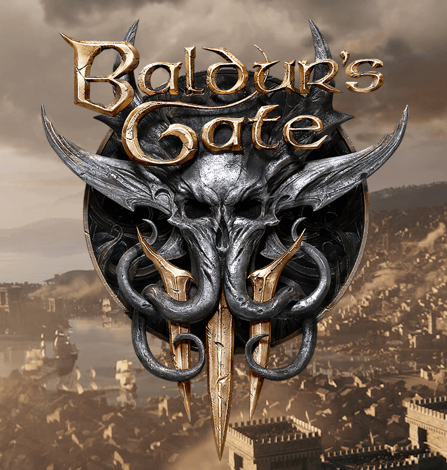
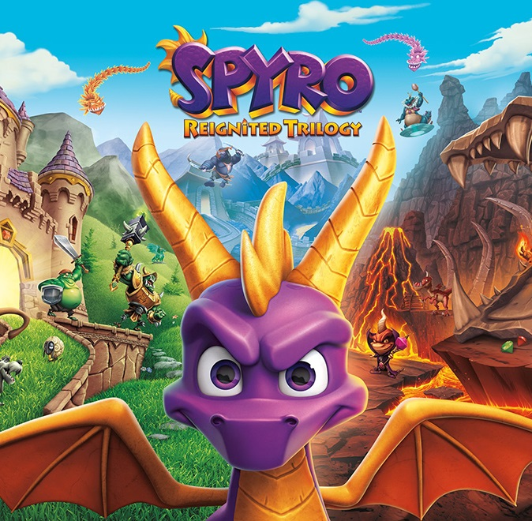

Мои любимые игры
| # | Название игры | Дата/Платформа | Обложка | Мнение |
|---|---|---|---|---|
| 1 | Baldur's Gate 3 | август 2023 г./PC |  | Игра находится в раннем доступе в Steam. Очень интресная рпг. Классный сюжет, большая вариативность и персонажи с характером. Рекомендую попобробать для любитлей Mass Effect, Dragon Age. |
| 2 | Spyro Reignited Trilogy | 13 ноября 2018 г./PS4 |  | Это ремастеред старой трилогии про дракончика Spyro. Старые уровни с новой графикой и спецэффектами. Можно приятно поностольгировать этой душевной игрой детства. |
| 3 | The Elder Scrolls V: Skyrim | 11 ноября 2011 г./PC |  |
Интересная РПГ, которая уже давно себя зарекомендовала как атмосфераная игра на много часов игр. Много квестов, интересный сюжет, есть вариативность выбора. Отличная музыка, прекрасная атмосфера, красивые виды для графики того года - просто шикарно. |